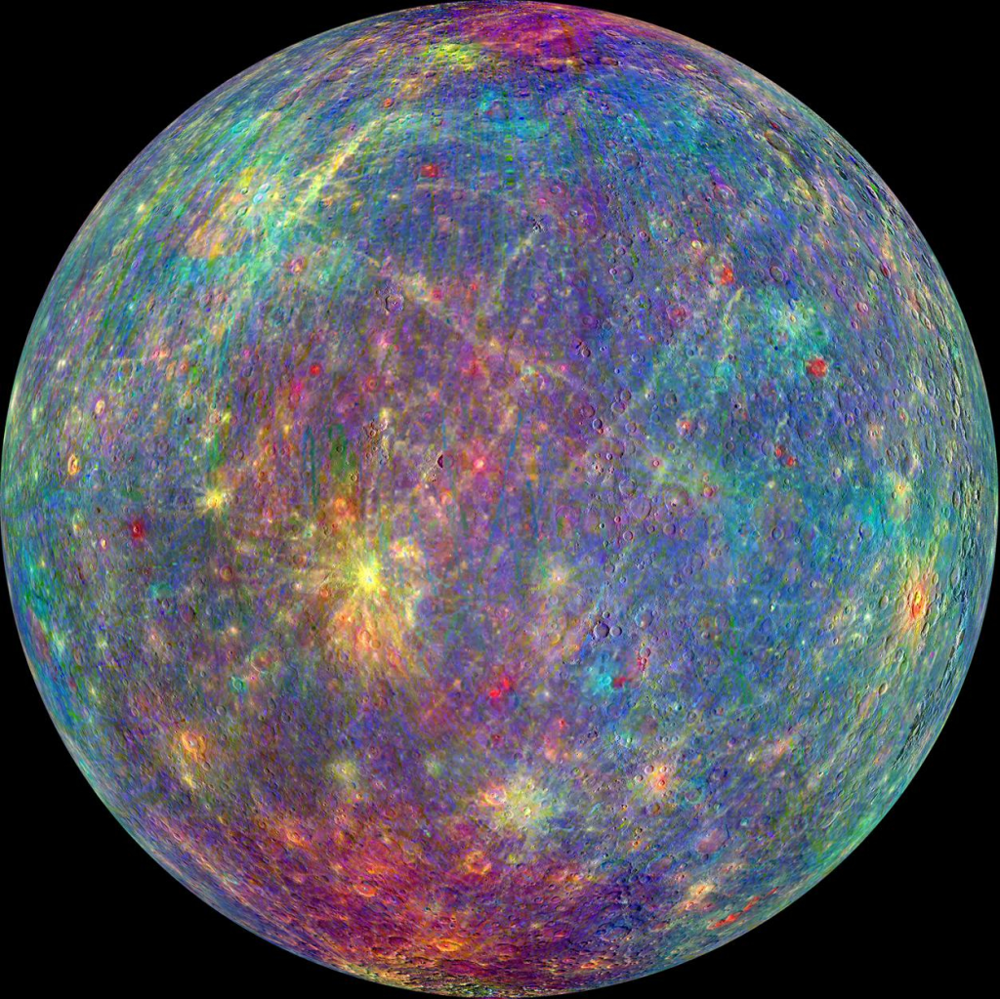

The Swift Planet
Mercury is the closest planet to the Sun and the smallest in the Solar System.
Mercury is the first planet from the Sun and the smallest in the Solar System. It is a rocky planet with a trace atmosphere and a surface gravity slightly higher than that of Mars. The surface of Mercury is similar to Earth's Moon, being heavily cratered, with an expansive rupes system generated from thrust faults, and bright ray systems, formed by ejecta. Its largest crater, Caloris Planitia, has a diameter of 1,550 km (960 mi), which is about one-third the diameter of the planet (4,880 km or 3,030 mi). Being the most inferior orbiting planet, it always appears close to the sun in Earth's sky, either as a "morning star" or an "evening star.” It is also the planet with the highest delta-v needed to travel to and from all other planets of the Solar System.
